You can check your flags here. If you want to have your name on the leaderboard, enter your name when entering flags. Otherwise, leave the name field blank. To earn points on this activity, you MUST enter your flags and click Submit on the form at the bottom of this page.
We can write programs to track data from sensors and to control devices.
We'll use the PicoBricks Base Kit, which includes a Raspberry Pi Pico W board and components like light sensors and buzzers to experiment with this process. Grab a kit and go to PicoBricks Blocks IDE.
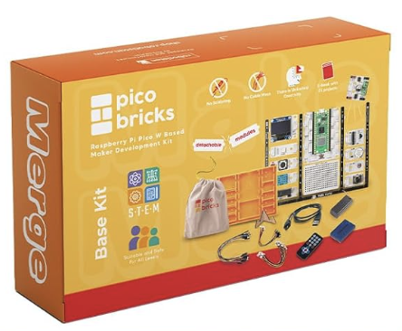
Alternatively, if you don't have a physical kit, you can use the online simulator by clicking in the top right corner of the IDE in the browser.
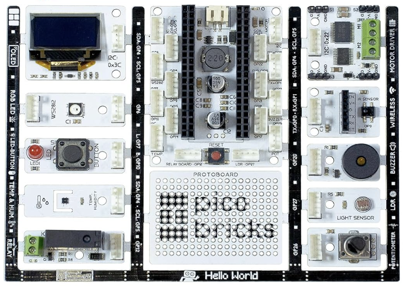
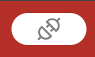
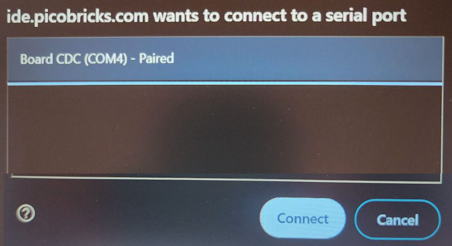
Build this code to make the red LED connected to the Pico board blink. You'll find the blocks you need under Basic, Loops, and Bricks.
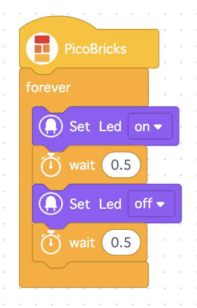
Can you make it blink faster?
Build this code to make the red LED turn on when you click the button connected to the board. You'll find the if block under Logic.
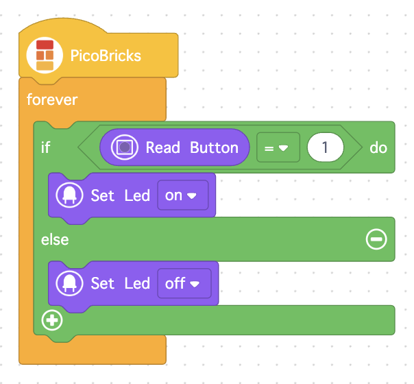
Click the </> Py button to see corresponding Python code.
NOTE: If you're using the simulator, you'll have to switch back to the original site and rebuild the code blocks. The </> Py button is not present on the simulator version of the site.
What pin on the pico board is connected to the button?
What pin is connected to the LED?
After you've altered the blocks and with the Python code still visible, hold ctrl and click z (ctrl-z). Notice that your last step is undone in both the blocks and the Python code. To redo your step, hold shift and ctrl and click z (shift-ctrl-z).
Build this code to make the RGB LED turn on when it gets dark. You need some blocks from the RGB LED group.
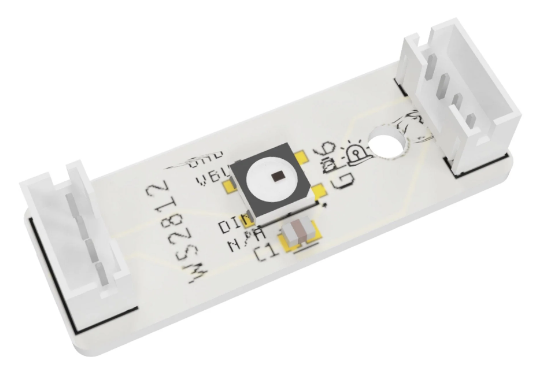
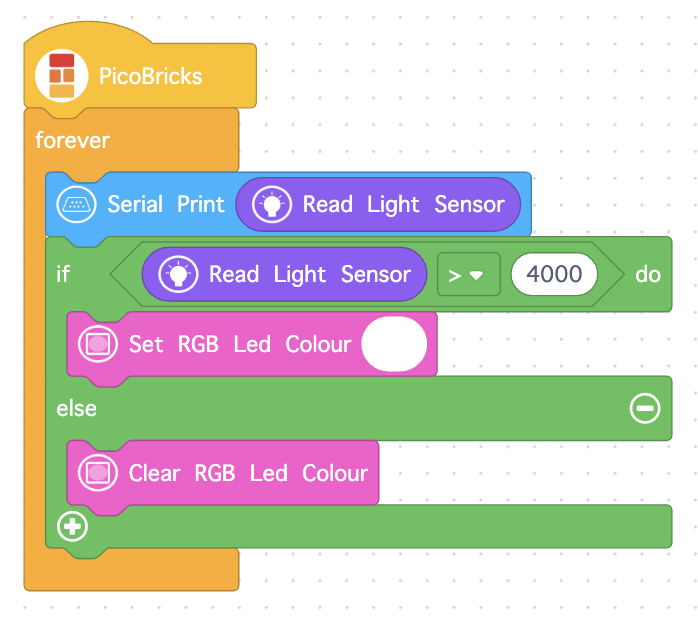
You can hold your hand over the light sensor (no need to touch it) to reduce the light it receives and to make the reading greater than 4000.
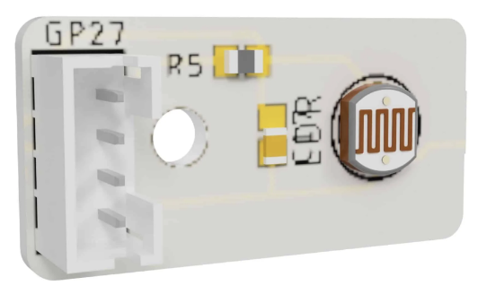
Click the Serial Monitor tab near the bottom of the window, if you want to see the light sensor's readings.
What basic color is R=50, G=50, and B=200?
*Values for colors range from 0 to 255. Red (R), green (G), and blue (B) are combined to make a multitude of colors. Check out W3Schools' RGB Calculator tool (https://tinyurl.com/w3sColor) to experiment with creating colors. Can you find the RGB values for your favorite?
Build this code to make the potentiometer function as a dimmer for the RGB LED. You'll need some blocks from the Math and Variable groups.
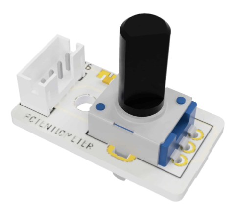
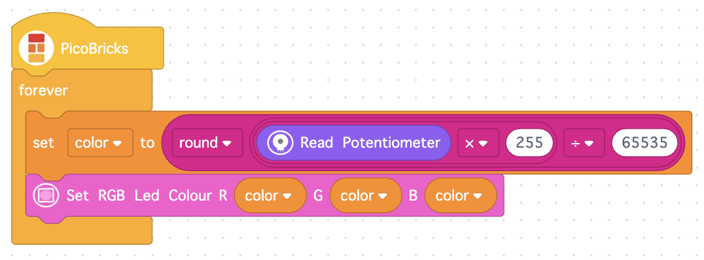
How could you change the RGB settings, so the light is red rather than white? Make it fully red with no green and no blue. Write just the numbers separated by commas and no spaces. For example, for R=50, G=50, and B=200, write 50,50,200.
Build this code to create an alarm which buzzes when it gets light and displays "Good Morning." When it gets dark, it stops buzzing and displays "Good Night." You'll need some blocks from the Display group.
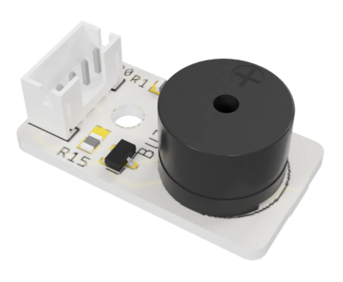
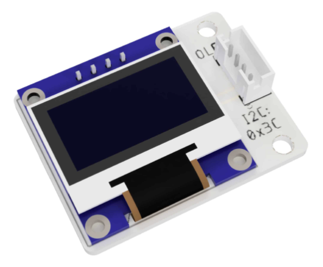
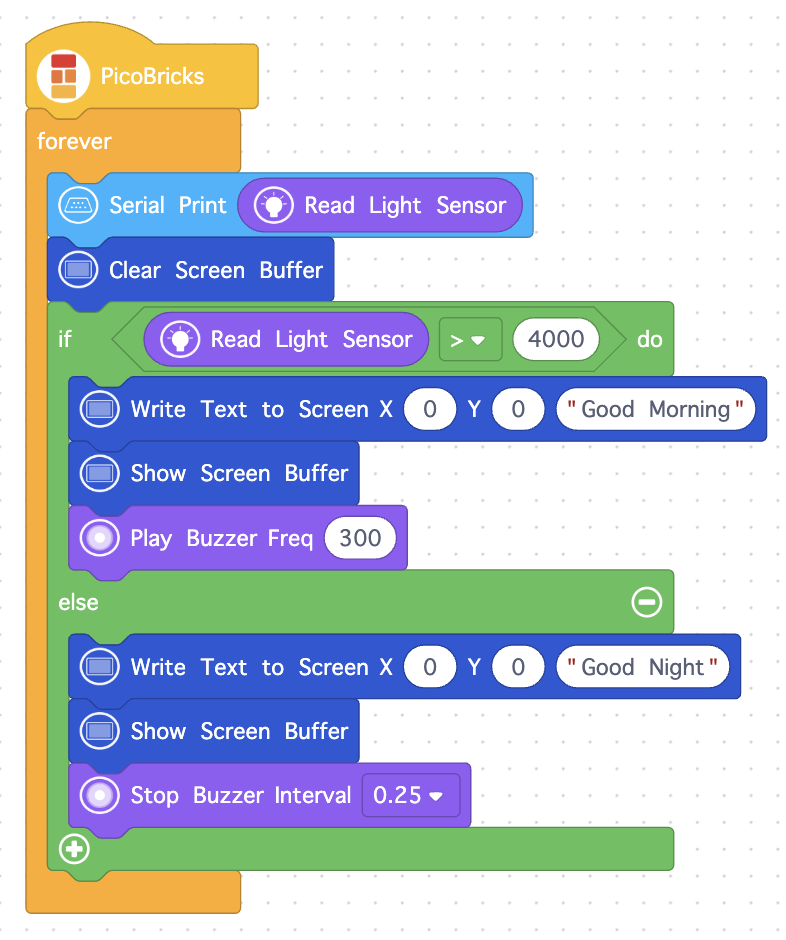
To which pin on the pico board is the buzzer connected?
Feel free to continue experimenting. Try creating your own program!
You must enter your flags below and click submit to earn points for this activity. You do NOT have to enter all flags to earn credit, but you must click submit. You may update the flags and submit them an unlimited number of times until the due date. Your highest score will be entered in the gradebook.
If a flag has more than one box to the right of it, enter the same flag into each box. These flags are worth more points.